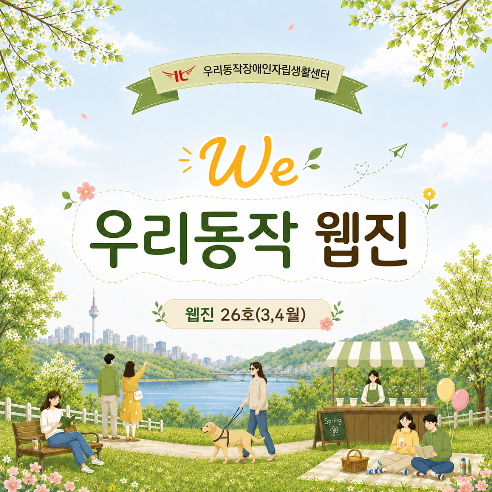
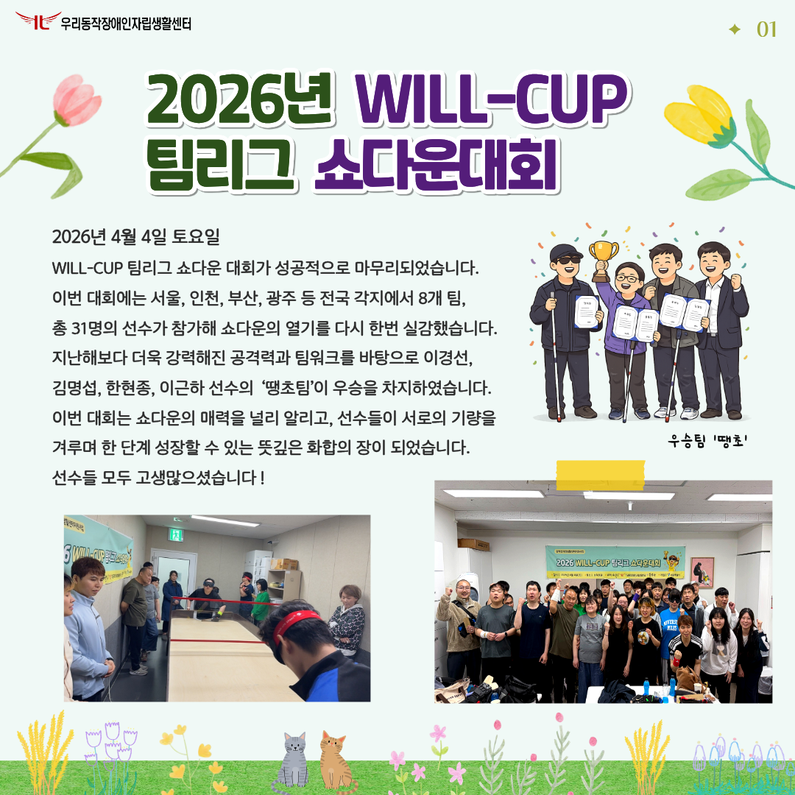
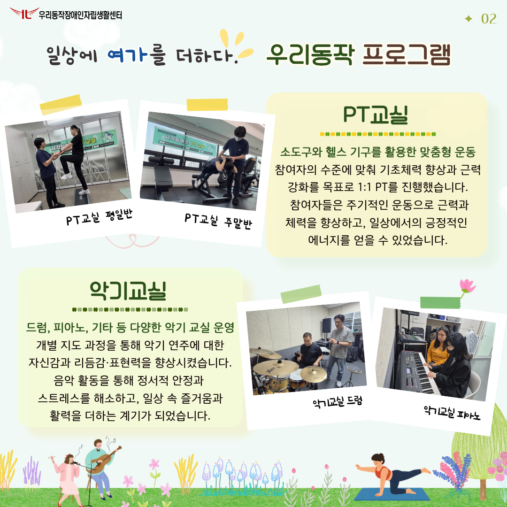
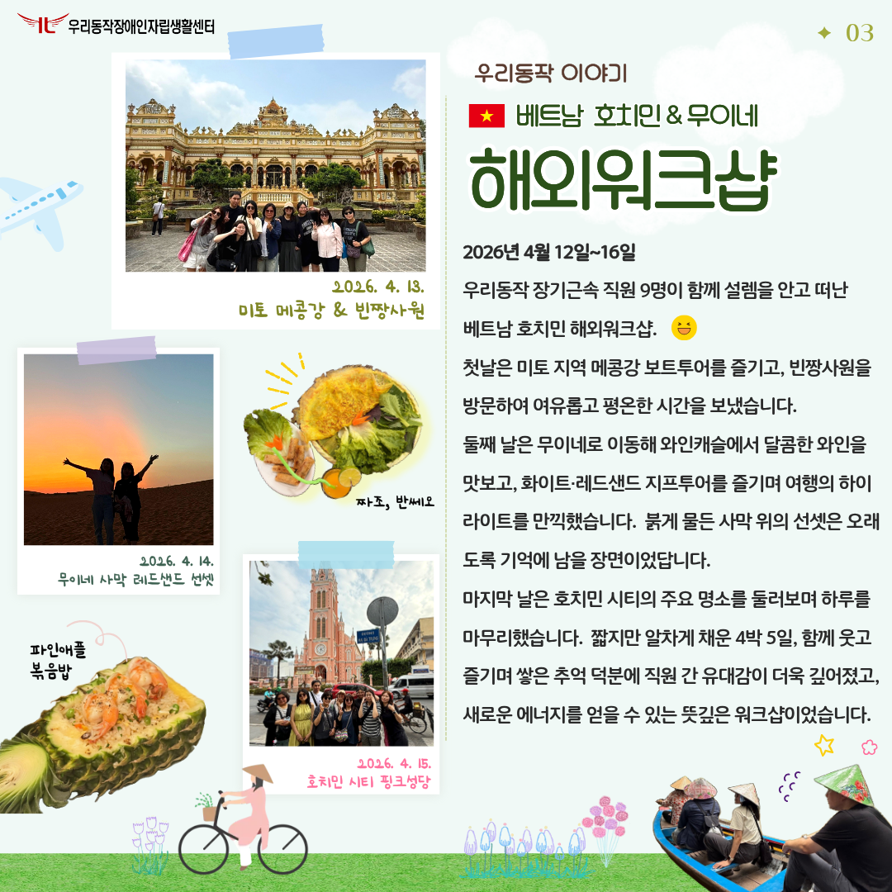
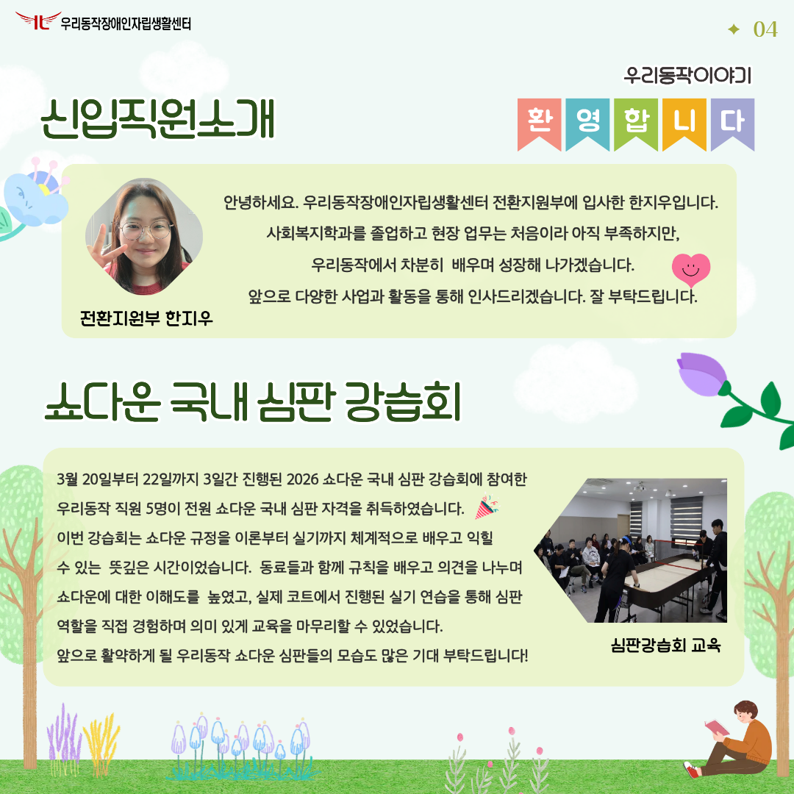
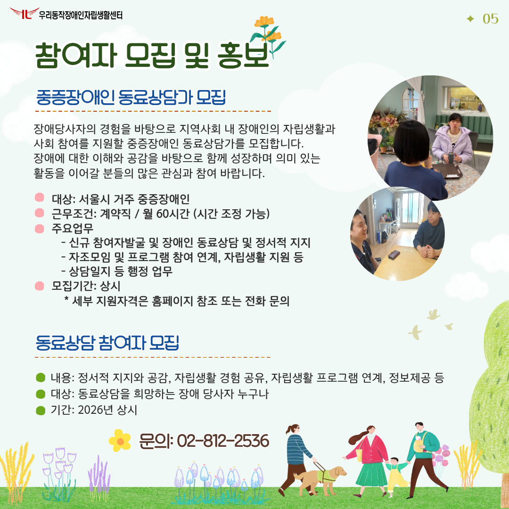
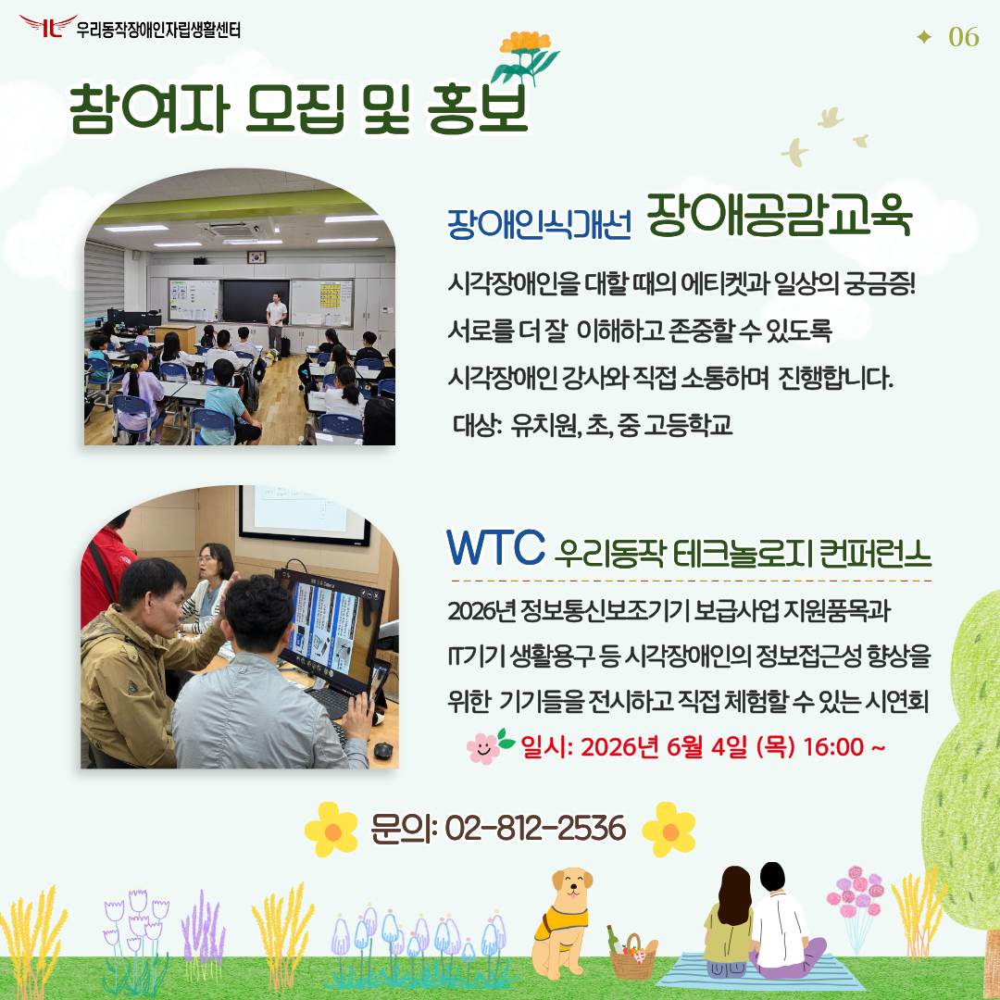
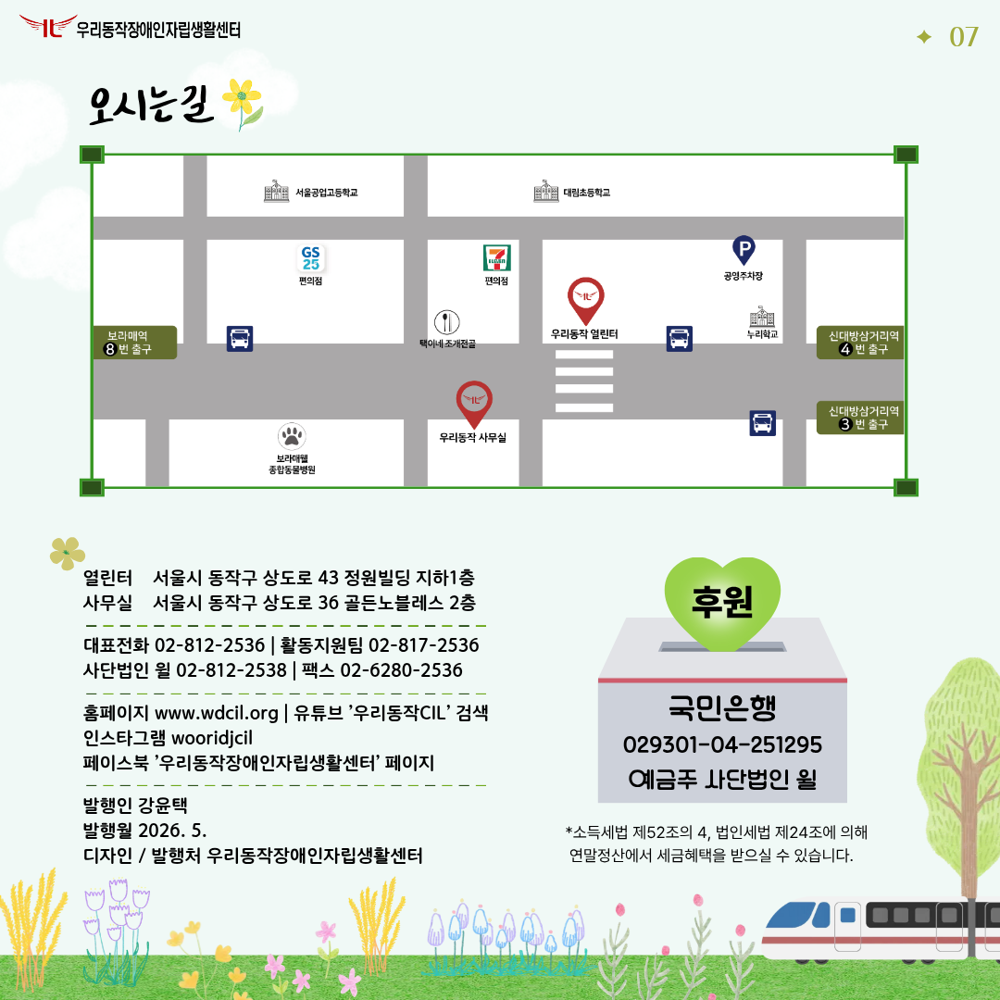

안녕하세요. 제26호 우리동작 웹진을 발간하였습니다. 표지 설명: 싱그러운 이팝나무 아래, 남산타워가 보이는 호숫가 공원으로 나들이를 나온 사람들, 그리고 안내견과 함께 보행하는 시각장애인이 여유로운 시간을 보내고 있다.

2026년 WILL-CUP 팀리그 쇼다운대회 2026년 4월 4일 토요일 WILL-CUP 팀리그 쇼다운 대회가 성공적으로 마무리되었습니다. 이번 대회에는 서울, 인천, 부산, 광주 등 전국 각지에서 8개 팀, 총 31명의 선수가 참가해 쇼다운의 열기를 다시 한번 실감했습니다. 지난해보다 더욱 강력해진 공격력과 팀워크를 바탕으로 이경선, 김명섭, 한현종, 이근하 선수의 ‘땡초팀’이 우승을 차지하였습니다. 이번 대회는 쇼다운의 매력을 널리 알리고, 선수들이 서로의 기량을 겨루며 한 단계 성장할 수 있는 뜻깊은 화합의 장이 되었습니다. 선수들 모두 고생많으셨습니다 ! 사진 설명: AI로 만든 땡초팀의 환호하는 이미지, 박진감 넘치는 쇼다운 경기 모습, 단체사진

PT교실 - 소도구와 헬스 기구를 활용한 맞춤형 운동 참여자의 수준에 맞춰 기초체력 향상과 근력 강화를 목표로 1:1 PT를 진행했습니다. 참여자들은 주기적인 운동으로 근력과 체력을 향상하고, 일상에서의 긍정적인 에너지를 얻을 수 있었습니다. 사진 설명: 스텝박스를 활용한 PT 교육, 헬스기구를 활용한 PT 교육 악기교실 - 드럼, 피아노, 기타 등 다양한 악기 교실 운영 개별 지도 과정을 통해 악기 연주에 대한 자신감과 리듬감·표현력을 향상시켰습니다. 음악 활동을 통해 정서적 안정과 스트레스를 해소하고, 일상 속 즐거움과 활력을 더하는 계기가 되었습니다. 사진 설명: 드럼 교실, 피아노 교실 수업

2026년 4월 12일 ~ 16일 우리동작 장기근속 직원 9명이 함께 설렘을 안고 떠난 베트남 호치민 해외워크샵. 첫날은 미토 지역 메콩강 보트투어를 즐기고, 빈짱사원을 방문하여 여유롭고 평온한 시간을 보냈습니다. 둘째 날은 무이네로 이동해 와인캐슬에서 달콤한 와인을 맛보고, 화이트·레드샌드 지프투어를 즐기며 여행의 하이라이트를 만끽했습니다. 붉게 물든 사막 위 선셋은 오래도록 기억에 남을 장면이었답니다. 마지막 날은 호치민 시티의 주요 명소를 둘러보며 하루를 마무리했습니다. 짧지만 알차게 채운 4박 5일, 함께 웃고 즐기며 쌓은 추억 덕분에 직원 간 유대감이 더욱 깊어졌고, 새로운 에너지를 얻을 수 있는 뜻깊은 워크샵이었습니다. 사진 설명: 빈짱사원에서의 단체사진, 무이네 사막 레드샌드 선셋을 배경으로 포즈를 취한 직원들, 호치민 시티 핑크성당 앞에서의 단체사진, 짜조, 반쎄오, 파인애플 볶음밥의 먹음직스러운 음식 사진들

전환지원부 한지우 안녕하세요. 우리동작장애인자립생활센터 전환지원부에 입사한 한지우입니다. 사회복지학과를 졸업하고 현장 업무는 처음이라 아직 부족하지만, 우리동작에서 차분히 배우며 성장해 나가겠습니다. 앞으로 다양한 사업과 활동을 통해 인사드리겠습니다. 잘 부탁드립니다. 사진 설명: 한지우 선생님이 밝은 미소를 지으며 브이 포즈를 하고 있는 모습. 쇼다운 국내 심판 강습회 3월 20일부터 22일까지 3일간 진행된 2026 쇼다운 국내 심판 강습회에 참여한 우리동작 직원 5명이 전원 쇼다운 국내 심판 자격을 취득하였습니다. 이번 강습회는 쇼다운 규정을 이론부터 실기까지 체계적으로 배우고 익힐 수 있는뜻깊은 시간이었습니다. 동료들과 함께 규칙을 배우고 의견을 나누며 쇼다운에 대한 이해도를 높였고, 실제 코트에서 진행된 실기 연습을 통해 심판 역할을 직접 경험하며 의미 있게 교육을 마무리할 수 있었습니다. 앞으로 활약할 우리동작 쇼다운 심판들의 모습도 많은 기대 부탁드립니다! 사진 설명: 심판강습회 교육 사진

중증장애인 동료상담가 모집 장애당사자의 경험을 바탕으로 지역사회 내 장애인의 자립생활과 사회 참여를 지원할 중증장애인 동료상담가를 모집합니다. 장애에 대한 이해와 공감을 바탕으로 함께 성장하며 의미 있는 활동을 이어갈 분들의 많은 관심과 참여 바랍니다. 대상: 서울시 거주 중증장애인 근무조건: 계약직 / 월 60시간 (시간 조정 가능) 주요업무 - 신규 참여자발굴 및 장애인 동료상담 및 정서적 지지 - 자조모임 및 프로그램 참여 연계, 자립생활 지원 등 - 상담일지 등 행정 업무 모집기간: 상시 * 세부 지원자격은 홈페이지 참조 또는 전화 문의 동료상담가 참여자 모집 내용:정서적 지지와 공감, 자립생활 경험 공유, 자립생활 프로그램 연계, 정보제공 등 대상:동료상담을 희망하는 장애 당사자 누구나 기간:2026년 상시 문의: 02-812-2536 *사진설명: 동료상담을 진행중인 상담가와 참여자의 모습

사업 더 보기장애인식개선 장애공감교육 시각장애인을 대할 때의 에티켓과 일상의 궁금증! 서로를 더 잘 이해하고 존중할 수 있도록 시각장애인 강사와 직접 소통하며 진행합니다. 대상:유치원, 초, 중 고등학교 WTC 우리동작 테크놀로지 컨퍼런스 2026년 정보통신보조기기 보급사업 지원품목과 IT기기 생활용구 등 시각장애인의 정보접근성 향상을 위한 기기들을 전시하고 직접 체험할 수 있는 시연회 일시: 2026년 6월 4일 (목) 16:00 ~ 문의: 02-812-2536 사진 설명: 초등학교에서 장애공감교육을 진행하고 있는 모습, 정보통신기기를 체험하고 있는 모습 왼쪽 하단의 사업 자세히 보기 버튼을 통해 자세한 사업 내용을 확인하실 수 있습니다.

만족도 조사국민은행 029301-04-251295 예금주 사단법인 윌 소득세법 제52조의 4, 법인세법 제24조에 의해 연말정산에서 세금혜택을 받으실 수 있습니다. 열린터 서울시 동작구 상도로 43 정원빌딩 지하 1층 사무실 서울시 동작구 상도로 36 골든노블레스 2층 대표전화 02-812-2536 활동지원팀 02-817-2536 사단법인 윌 02-812-2538 팩스 02-6280-2536 홈페이지 www.wdcil.org 유튜브 우리동작CIL 검색 인스타그램 wooridjcil 페이스북 우리동작장애인자립생활센터 페이지 발행인 강윤택 발행월 2026년 5월 디자인 및 발행처 우리동작장애인자립생활센터